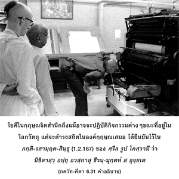

โยคีผู้ฏิบัติในการรับใช้องค์อภิวิญญาณด้วยความเคารพบูชาเช่นนี้ รู้ว่าข้าและอภิวิญญาณเป็นหนึ่งเดียวกันจะดำรงอยู่ในข้าเสมอในทุกๆสถานการณ์

โยคีผู้ฝึกปฏิบัติสมาธิอยู่ที่อภิวิญญาณเห็นภาคแบ่งแยกขององค์กฺฤษฺณภายในตัวเขา ในรูปพระวิษณุสี่กร ทรงหอยสังข์ กงจักร คทา และดวกบัว โยคีควรรู้ว่าพระวิษณุทรงไม่แตกต่างจากองค์กฺฤษฺณ องค์กฺฤษฺณในรูปของอภิวิญญาณนี้ทรงสถิตในหัวใจของทุกๆ คน ยิ่งไปกว่านั้นคือ ไม่มีข้อแตกต่างระหว่างอภิวิญญาณที่มีจำนวนนับไม่ถ้วน ผู้ทรงปรากฏอยู่ภายในหัวใจอันนับไม่ถ้วนของสิ่งมีชีวิต ไม่มีข้อแตกต่างระหว่างบุคคลในกฺฤษฺณจิตสำนึกผู้ปฏิบัติรับใช้ด้วยความรักทิพย์แด่องค์กฺฤษฺณอยู่เสมอ และโยคีผู้สมบูรณ์ปฏิบัติสมาธิอยู่ที่อภิวิญญาณ โยคีในกฺฤษฺณจิตสำนึก ถึงแม้อาจจะปฏิบัติกิจกรรมต่างๆ ขณะที่อยู่ในโลกวัตถุ แต่จะดำรงสถิตในองค์กฺฤษฺณเสมอ ได้ยืนยันไว้ใน ภกฺติ-รสามฺฤต-สินฺธุ (1.2.187) ของ ศฺรีล รูป โคสฺวามี ว่า นิขิลาสฺวฺ อปฺยฺ อวสฺถาสุ ชีวนฺ-มุกฺตห์ ส อุจฺยเต สาวกขององค์ภควานฺผู้ปฏิบัติอยู่ในกฺฤษฺณจิตสำนึกเสมอจะได้รับความหลุดพ้นโดยปริยาย ใน นารท ปญฺจราตฺร ได้ยืนยันไว้ดังนี้
ทิกฺ-กาลาทฺยฺ-อนวจฺฉินฺเน
กฺฤษฺเณ เจโต วิธาย จ
ตนฺ-มโย ภวติ กฺษิปฺรํ
ชีโว พฺรหฺมณิ โยชเยตฺ
“จากการตั้งสมาธิจิตอยู่ที่พระวรกายทิพย์ขององค์กฺฤษฺณ ผู้ทรงแผ่กระจายไปทั่ว ผู้ทรงอยู่เหนือเวลา และอวกาศ เขาซึมซาบอยู่ในการระลึกถึงองค์กฺฤษฺณ จากนั้นจะบรรลุถึงระดับแห่งความสุขในการมาคบหาสมาคมทิพย์กับพระองค์”
กฺฤษฺณจิตสำนึกเป็นระดับสูงสุดแห่งสมาธิในการปฏิบัติโยคะ การเข้าใจอย่างแท้จริงว่าองค์กฺฤษฺณทรงปรากฏในรูป ปรมาตฺมา อยู่ภายในหัวใจของทุกๆ คนทำให้โยคีไม่มีความผิดพลาด คัมภีร์พระเวท (โคปาล-ตาปนี อุปนิษทฺ 1.21) ได้ยืนยันพลังอำนาจขององค์ภควานฺที่ไม่สามารถมองเห็นได้ไว้ดังนี้ เอโก ’ปิ สนฺ พหุธา โย ’วภาติ “ถึงแม้ว่าองค์ภควานฺทรงเป็นหนึ่ง แต่พระองค์ทรงปรากฏอยู่ภายในหัวใจจำนวนที่นับไม่ถ้วนอย่างมากมาย” ในทำนองเดียวกัน สฺมฺฤติ-ศาสฺตฺร ได้กล่าวไว้ว่า
เอก เอว ปโร วิษฺณุห์
สรฺว-วฺยาปี น สํศยห์
ไอศฺวรฺยาทฺ รูปมฺ เอกํ จ
สูรฺย-วตฺ พหุเธยเต
“พระวิษณุทรงเป็นหนึ่ง ถึงกระนั้นพระองค์ยังทรงแผ่กระจายไปทั่วด้วยพลังอำนาจที่มองไม่เห็น ถึงแม้ว่าทรงมีรูปลักษณ์เดียว พระองค์ยังทรงปรากฏอยู่ทุกหนทุกแห่ง เสมือนดังดวงอาทิตย์ที่ปรากฏอยู่หลายๆ แห่งในขณะเดียวกัน”